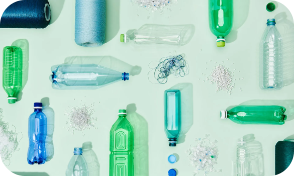

ABOUT US
Envion is the epitome of style with a purpose. We redefine fashion for the young by transforming recycled plastic into trendy, vibrant clothing. Our commitment to sustainability goes beyond aesthetics, as each garment tells a story of environmental responsibility. At Envion, we seamlessly merge the latest trends with eco-conscious practices, ensuring our fashion doesn't just make a statement but contributes to a greener tomorrow. With transparency, integrity, and a passion for positive change, we invite you to join the Envion movement. Explore our collection, wear your values, and be part of a future where fashion meets purpose.
Envion employs cutting-edge machine learning in our innovative process to transform plastic into stylish clothing. First, plastic waste is meticulously sorted, and advanced algorithms identify the ideal material for garment production. Machine learning models optimize the recycling process, ensuring efficiency and reducing environmental impact. State-of-the-art machines then convert the selected plastic into high-quality fibers, ready for weaving or knitting. Our intelligent systems constantly adapt and enhance production, minimizing resource consumption. The result is a seamless fusion of technology and sustainability, creating fashionable clothing that not only looks good but also contributes to a cleaner, greener planet. Welcome to the future of fashion at Envion.
